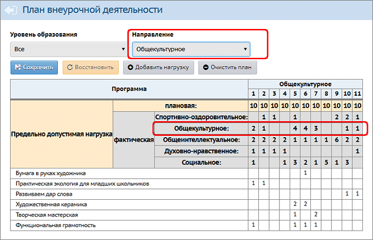

На данном экране отображается таблица, в которой сведены вместе плановая нагрузка и фактическая нагрузка по каждой параллели (количество часов в неделю).
Чтобы работать с таблицей, нужно выбрать Уровень образования и Направление.
1. Плановая нагрузка
Плановую нагрузку можно заполнить вручную, по каждой параллели и по каждой программе внеурочной деятельности. Для того чтобы добавить программу в таблицу, нажмите кнопку Добавить нагрузку. В открывшемся окне выберите программу внеурочной деятельности, после нажатия кнопки Добавить она появится в таблице. Затем щёлкните мышью в нужные ячейки и введите значения нагрузки (часы в неделю).
2. Фактическая нагрузка
Соответствующие строки выделены в таблице серым цветом. Они не заполняются вручную, а подсчитываются автоматически.
Внимание! В таблице отображаются не все программы внеурочной деятельности, а только программы из выбранного направления. А фактическая нагрузка (серые строки) выводится сразу по всем направлениям:

Примечание.
Данный план внеурочной деятельности решает формальную задачу. Для создания групп внеурочной деятельности заполнять его не обязательно.